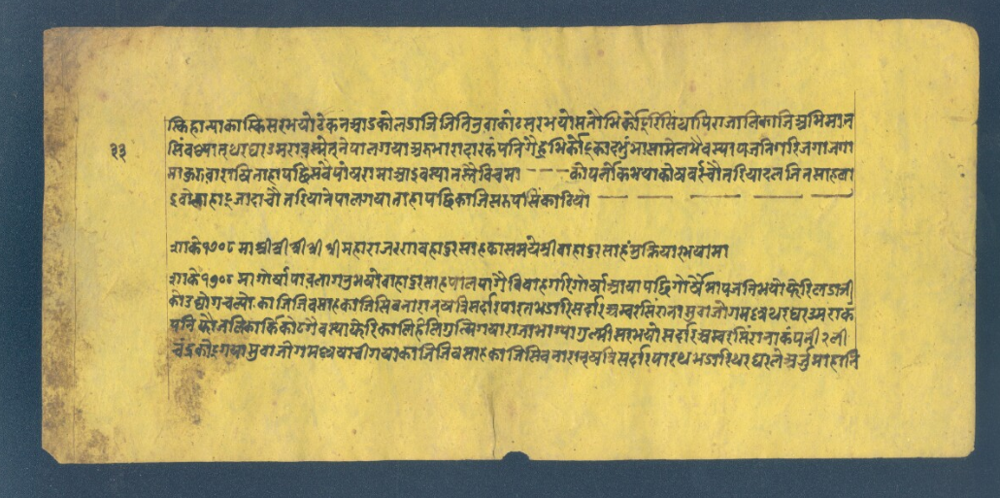
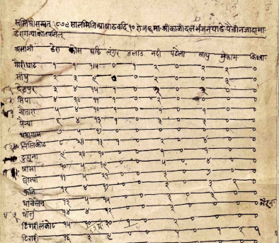
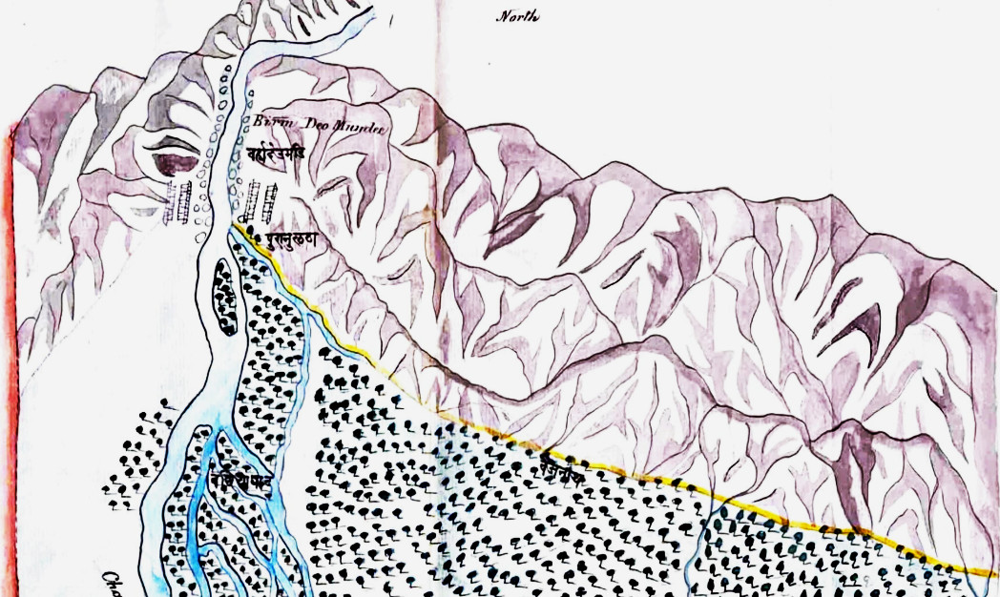
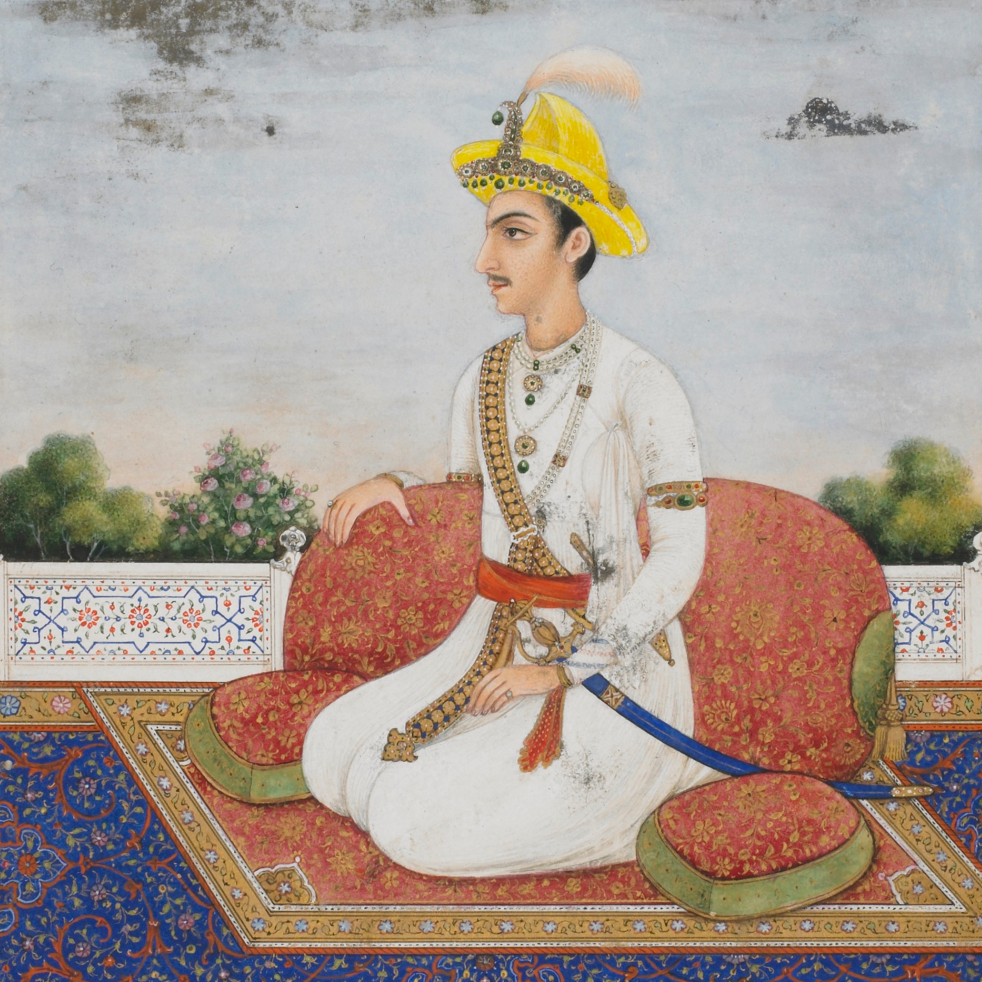
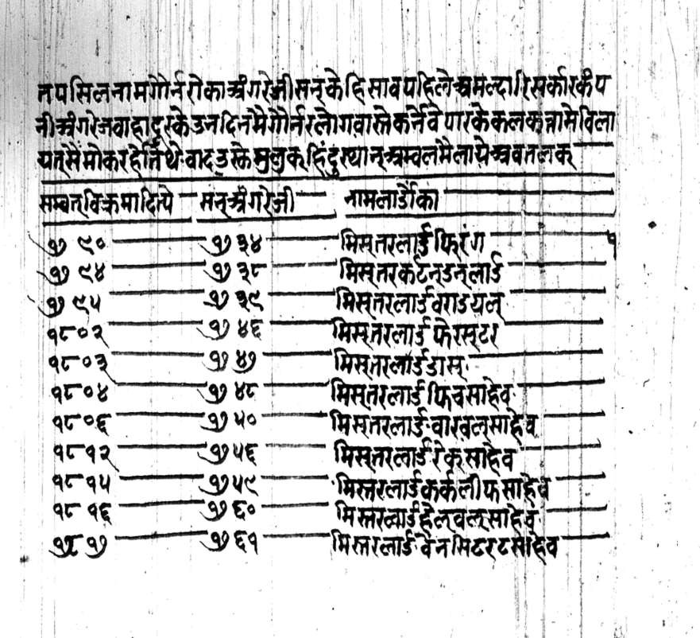
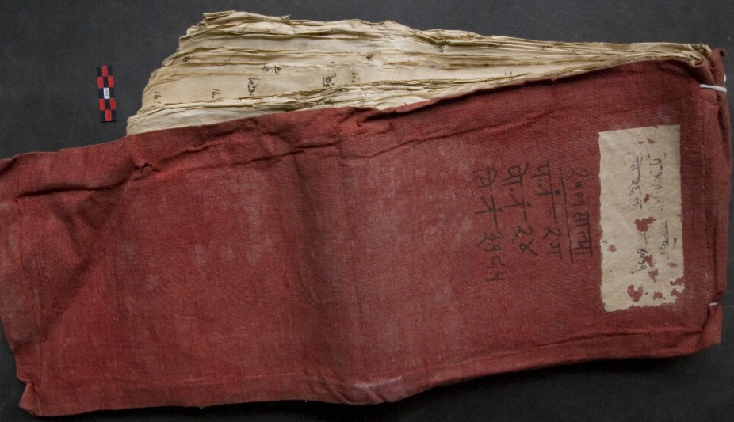

Dissertation
Information, Knowledge and Political Order in Modern South Asia: A View from Nepal, 1750–1850
My dissertation examines how political actors in South Asia gathered, synthesized, and deployed intelligence — and what this reveals about statecraft, political thought and regional order in the century between the decline of Mughal power and the consolidation of British imperial rule. I approach these questions from the vantage point of the Gorkha kingdom — a conquest state that grew from a small hill polity in the Nepal Himalayas into a sprawling territorial power by the early 19th century.



In contrast to the overwhelming reliance on colonial archives for addressing these subject, I use materials produced by non-European societies and states to show that empirical activities and attitudes were not markers of colonial rule specifically, but part of a shared repertoire of techniques available to modern states in general.
Academic Interests
My broader topics of research include histories of ideas and communication (kingship, geopolitical thought, courtly and public culture); knowledge forms produced by institutions and collectives (maps, statistics, histories); and the long-durée history of state formation and economy (bureaucracy, boundaries, state finance, military labor).



I am also interested in archives and documentary practices as historical objects — the genres, scripts, and categories through which people organised information, ideas and their societies. I work in multiple languages used in South Asia, and ask comparative questions about state-society relations that engage with historical sociology, comparative politics, literary studies, and science and technology studies. I am also interested in developing digital tools to aid the research and cataloguing of historical materials.